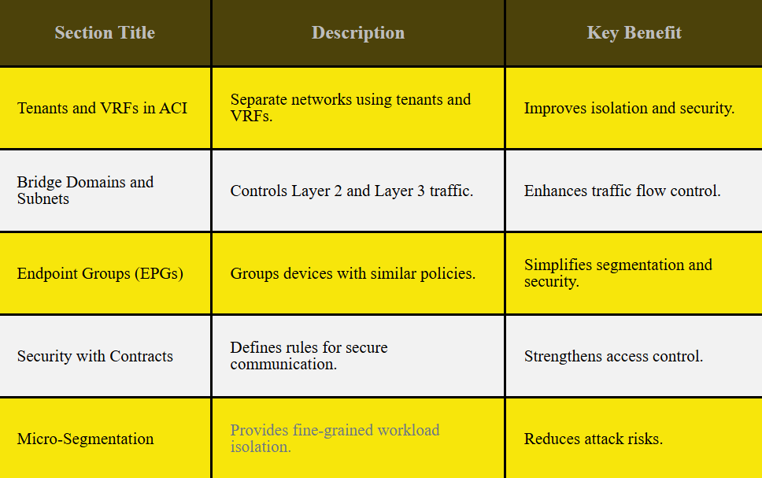
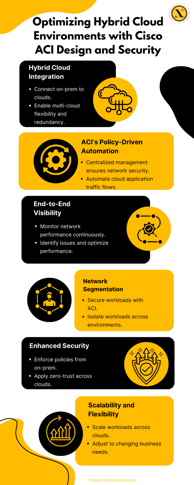
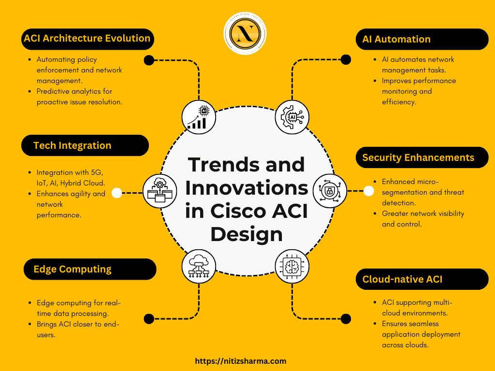

Cisco ACI Training
Cisco ACI Design Guide is very important for building a scalable, secure, and automated network. It covers ACI’s policy-driven automation, centralized control, and increased security, helping users optimize network design. This guide outlines best practices, key design principles, and common challenges in implementing ACI.
From network segmentation to hybrid cloud integration, a well-designed ACI architecture confirms flexibility and performance.Cisco ACI Training helps professionals understand ACI’s design strategies, creating an efficient, future-proof network infrastructure.
It allows organizations to streamline operations, reduce complexity, and boost network security Explore how to design and optimize a Cisco ACI network with this comprehensive guide, secure scalability, security, and improved management for your organization.
1. What is Cisco ACI Design Guide?
A Cisco ACI Design Guide is an essential resource for network architects and IT professionals aiming to design and implement a Cisco Application Centric Infrastructure (ACI) network. This guide outlines best practices, recommended methodologies, and design principles to help create a scalable, secure, and efficient ACI network.
The Cisco ACI Design Guide covers several key aspects:
Application-Centric Model:
- Aligns network infrastructure with the specific needs of business applications.
- Enhances overall performance and application delivery.
- More straightforward and lightweight compared to SOAP.
Scalable Architecture:
- Provides strategies to accommodate business growth.
- Ensures flexibility for future technology advancements.
Policy-Driven Automation:
- Simplifies network configuration and management.
- Reduces manual errors and operational overhead.
- Automates deployment and policy enforcement.
Simplified Network Management:
- Centralizes management with Cisco APIC (Application Policy Infrastructure Controller).
- Reduces complexity in managing multiple devices.
- Increases operational efficiency and visibility.
Integrated Security:
- Embeds security policies directly into the ACI fabric.
- Secures both applications and network infrastructure.
- Helps protect against external and internal threats.
Optimized Data Center Design:
- Focuses on high availability and fault tolerance.
- Improves network resilience and uptime.
Improved Performance and Efficiency:
- Optimizes network resource utilization.
- Enhances traffic flow and application performance.
2. Key Components of Cisco ACI Design
Cisco ACI (Application Centric Infrastructure) is a comprehensive, software-defined networking (SDN) solution that provides centralized automation and policy-based management. The key components of a Cisco ACI design are crucial for ensuring scalability, flexibility, and optimal network performance. Here’s a breakdown:
Application Policy Infrastructure Controller (APIC):
- Serves as the brain of Cisco ACI, centralizing management, policy, and automation.
- Orchestrates communication between all ACI components.
Leaf and Spine Switches:
- ACI’s leaf and spine architecture ensures a non-blocking, highly available network fabric.
- ACI uses policies to define how these endpoints interact with each other within the fabric.
Endpoints:
- Endpoints, such as servers and virtual machines, are connected to leaf switches.
- Reduces manual errors and operational overhead.
- Automates deployment and policy enforcement.
Bridge Domain (BD) and VLANs:
- BDs represent a Layer 2 broadcast domain, while VLANs logically segment network traffic.
- Critical for traffic isolation and efficient communication.
Contracts:
- Define rules that govern communication between different application tiers.
- Ensure security and traffic flow control.
3 . Exploring Cisco ACI Design Models: Choosing the Right Architecture
When designing a Cisco ACI network, choosing the right architecture is crucial to ensure scalability, performance, and manageability. Cisco ACI offers several design models tailored to different organizational needs.
Leaf-Spine Architecture
- Offers high-performance, low-latency connectivity.Eliminates network bottlenecks and ensures optimal traffic flow by connecting each leaf switch to every spine switch.
End-Host Mode (EHM)
- Traffic between end-hosts is switched by the leaf switches.Reduces the complexity by minimizing the need for spine switches to handle local traffic, making it efficient for smaller environments.
Multi-Pod Architecture
- Ideal for large enterprises or data centers requiring multi-site deployments.Provides high availability and disaster recovery by interconnecting multiple pods, each with its own fabric.
Multi-Site Architecture
- Designed for global enterprises connecting separate data centers or sites.Allows seamless workload mobility and centralized policy management across multiple locations.
Hybrid Cloud Architecture
- Integrates on-premise ACI with public cloud environments.Offers flexibility and scalability by extending data centers into the cloud for additional resources and backup.
ACI-Enabled WAN Architecture
- Combines Cisco ACI with SD-WAN solutions for optimized connectivity.Ensures secure, high-performance connectivity across geographically distributed locations.
4 . Implementing Cisco ACI Network Segmentation: Key Strategies and Techniques
Network segmentation is a crucial aspect of Cisco ACI (Application Centric Infrastructure) to enhance security, performance, and scalability. Here are key strategies and techniques for effectively implementing ACI network segmentation:
Define Tenant and Bridge Domains
- Start by defining separate tenants in ACI to logically divide the network.Each tenant can have its own bridge domains for traffic isolation, improving security and control.
Use VRFs for Layer 3 Segmentation
- Implement Virtual Routing and Forwarding (VRFs) to achieve Layer 3 segmentation.VRFs help maintain separate routing tables for different tenants or departments, ensuring traffic isolation.
Security Policies with Contracts
- Create contracts between endpoints to define rules for traffic flow and access control.These contracts help enforce segmentation by allowing or denying traffic based on defined policies.
EPGs (Endpoint Groups)
- Group endpoints based on their functions or applications into Endpoint Groups (EPGs).This simplifies management and enhances security by ensuring only authorized traffic can flow between EPGs.
Use ACI Multi-Site
- For larger deployments, ACI Multi-Site architecture allows segmentation across multiple data centers.It ensures consistent policies and configurations across all locations.
Top 5 Cisco ACI Network Segmentation Strategies
5 . Policy Design in Cisco ACI
Cisco ACI (Application Centric Infrastructure) is designed to streamline and optimize network policies, ensuring better management and automation. Effective policy design in ACI is essential for building a secure, scalable, and reliable network. Here are the key components of policy design:
Centralized Policy Management:
- Cisco ACI allows for centralized policy definition, ensuring consistency across the network. Policies are defined at the application level and can be easily applied across the entire network, reducing manual configuration and errors.
Tenant-Based Policy Design:
- ACI uses tenants to logically segregate network resources. Policies can be designed per tenant, providing better isolation and security for different business units or applications within the same infrastructure.
- Isolation: Ensures that each tenant operates independently.
- Security: Policies can be tailored for individual tenants, improving security.
Integration with Security Services:
- ACI integrates with various security services such as firewalls and intrusion detection systems, providing robust policy enforcement.
- Security Enforcement: Policies can be tied to specific security rules.
6 . Automation in Cisco ACI Design
Automation plays a crucial role in simplifying and optimizing Cisco ACI designs. By incorporating automation, network administrators can efficiently manage configurations, reduce human error, and ensure consistent policy enforcement. Here are key aspects of automation in Cisco ACI design:
Simplified Configuration:
- Automates repetitive tasks like fabric setup, tenant creation, and endpoint management.Reduces time spent on manual configuration, enabling faster deployment.
Policy Consistency:
- It guarantees uniform policy application throughout the entire network, maintaining consistent security and compliance.Minimizes the risk of configuration drift and improves network security.
Scalability:
- Makes it easier to scale the ACI fabric as the network grows.Handles increased workloads without introducing complexity.
Integrated Tools:
- Supports integration with automation tools like Cisco APIC, Ansible, and Terraform.Provides seamless automation throughout the network lifecycle.
Real-time Monitoring and Adjustments:
- Continuously monitors network performance.Makes real-time adjustments to optimize traffic flow, security, and resource utilization.
Reduced Operational Costs:
- Frees up resources by automating routine tasks.Allows network teams to focus on more strategic management, reducing overall operational costs.
7 . Cisco ACI Design for Hybrid Cloud Environments
8 . Cisco ACI Security Enhancements: Segmentation and Threat Mitigation
Cisco ACI offers advanced security features to protect your network and applications through effective segmentation and proactive threat mitigation. These enhancements help to ensure that only authorized traffic can flow within the network, reducing vulnerabilities and minimizing risks.
Key Security Features:
Micro-Segmentation
- Provides granular control over traffic by isolating workloads into secure segments.Minimizes the attack surface by limiting lateral movement within the network.
Endpoint Groups (EPGs)
- Groups endpoints based on policy and security requirements.Simplifies the application of security policies for better traffic control.
Contracts and Filters
- Define communication rules between different application tiers.Filters enforce access control by allowing or denying traffic based on defined policies.
Integration with External Security Tools
- Works seamlessly with firewalls, intrusion detection systems, and other security services.Enhances policy enforcement and threat detection across the ACI fabric.
Distributed Firewalling
- Offers security at the fabric level, ensuring security is enforced end-to-end across the network.Protects against unauthorized access and ensures compliance with security policies.
9 . Best Practices for Cisco ACI Design
When designing a Cisco ACI network, following best practices is crucial for ensuring performance, scalability, and efficient management. Here are key best practices:
Understand Application Requirements
- Prioritize network design based on the needs of applications.
- Focus on performance, availability, and security tailored to each application.
Use Scalable Fabric Design
- Implement a spine-leaf architecture to maximize scalability.
- Ensure high availability and minimize network bottlenecks.
Group Endpoints into EPGs
- Categorize endpoints with similar policy and security requirements into Endpoint Groups (EPGs).
- Simplifies policy enforcement and network segmentation.
Leverage Policy-Driven Automation
- Use policy-based automation to provision network services.
- Ensure clear policy definitions to reduce configuration errors.
Plan for Future Growth
- Design with flexibility, leaving room for future scalability.
- Add more leaf and spine switches as traffic demands increase.
Ensure Redundancy and High Availability
- Use redundant links and devices for fault tolerance.
- Ensure high availability to minimize downtime and disruptions.
Monitor and Optimize Network Performance
- Continuously monitor ACI fabric health.
- Use analytics tools to optimize performance and identify potential issues early.
10 . Cisco ACI Security Enhancements: Segmentation and Threat Mitigation
Cisco ACI offers robust security features to ensure the integrity and confidentiality of data within the network. Key enhancements include:
Micro-Segmentation:
- Divides the network into smaller, isolated segments.
- Controls communication between segments to reduce the attack surface.
Policy-Driven Security:
- Defines security policies at the application level, ensuring traffic flows are regulated.
- Enables granular control over who can access what resources.
Threat Detection Integration:
- Integrates with firewalls and intrusion detection systems to monitor and block suspicious activity.
- Automates the response to potential threats in real-time.
End-to-End Security:
- Security policies are consistently applied across all ACI components, ensuring uniform protection.
- Secures both physical and virtual resources, providing comprehensive coverage.
11 . Challenges in Cisco ACI Design and How to Overcome Them
When designing a Cisco ACI (Application Centric Infrastructure) network, several challenges may arise. Below are some of the common hurdles and ways to overcome them:
Complexity of Configuration
- Cisco ACI’s flexibility can lead to complex configurations, especially for large
deployments.
Solutions: - Ensure thorough planning
- Use the ACI design guide
- Take advantage of Cisco’s automation tools like ACI Multi-Site for easier scalability
Integration with Legacy Systems
- Integrating ACI with existing networking hardware and systems can be
tricky.
Solutions: - Leverage ACI’s backward compatibility features
- Conduct a detailed network assessment to ensure smooth integration
Scalability Issues
- Managing scalability in a growing network might lead to performance
bottlenecks.
Solutions: - Implement ACI’s policy-driven automation to handle scaling efficiently
- Keep the architecture modular
Network Security Concerns
- Ensuring strong security across the ACI fabric can be challenging.
Solutions: - Use ACI’s built-in security features like micro-segmentation
- Follow best practices for segmenting traffic
Troubleshooting and Monitoring
- Identifying issues in ACI’s complex network environment can be difficult.
Solutions: - Use Cisco’s monitoring tools
- Set up a centralized logging system to help identify and resolve problems quickly
12 . Future Trends and Innovations in Cisco ACI Design
Conclusion :
Cisco ACI Design Guide provides a clear and structured approach to designing, implementing, and managing a Cisco Application Centric Infrastructure network. By following the best practices and addressing common challenges, businesses can gain valuable insights from a Cisco Asi Course to create a scalable, secure, and efficient network that aligns with application needs.
Cisco ACI offers robust solutions for automation, security, and performance, making it an ideal choice for modern data center environments. With proper planning and adherence to the design principles, organizations can achieve seamless network management and increase operational efficiency.